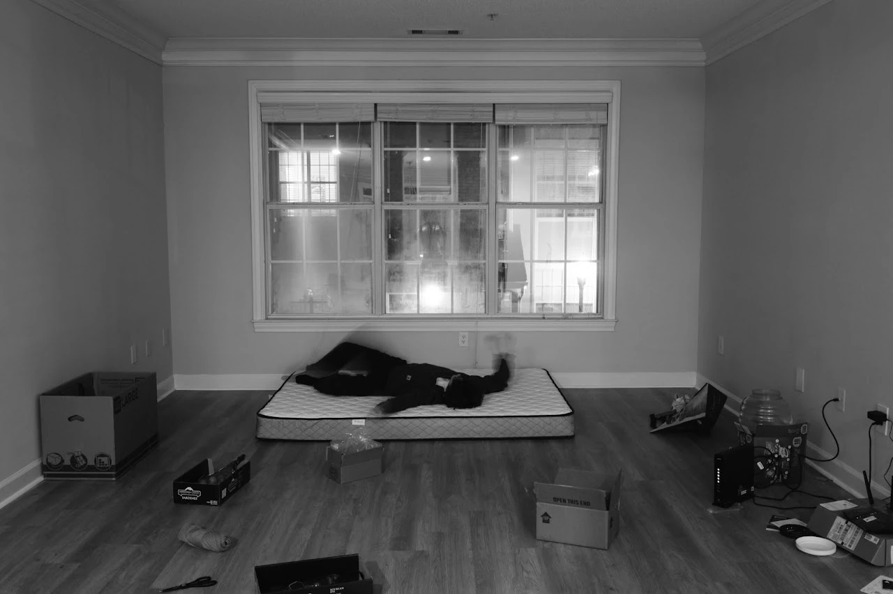
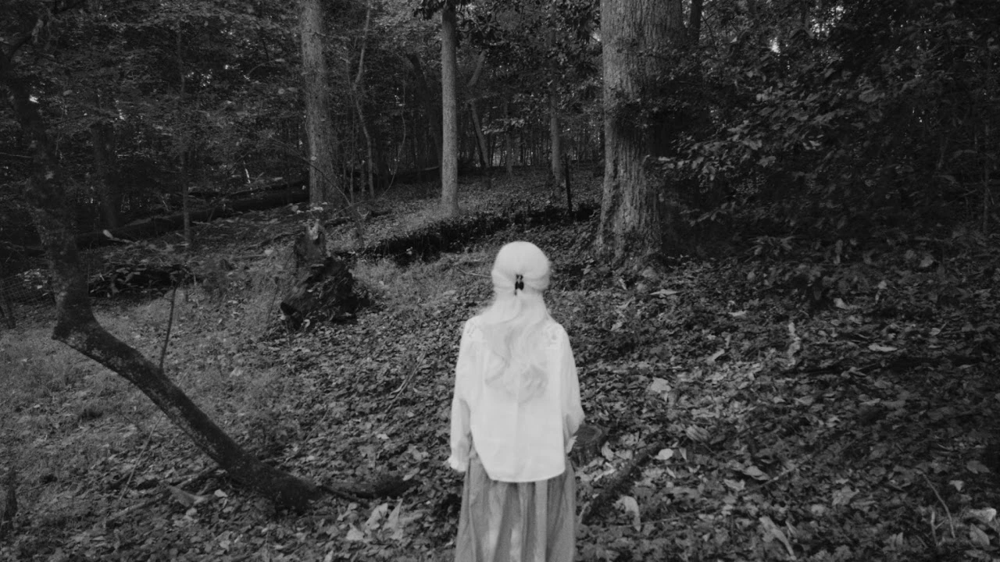
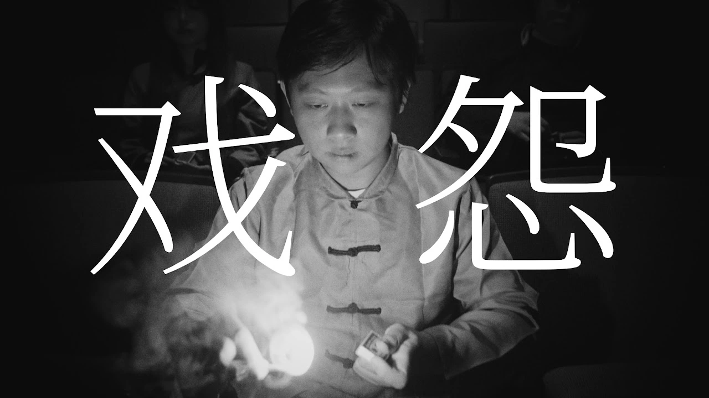
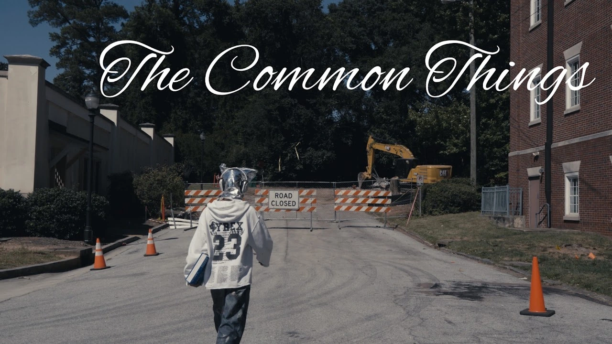

Cover unavailable. Open the project to continue.
Cover unavailable. Open the project to continue.Rhythms of Chaos
Photographs taken with my 28mm Leica Q
Selected series · Concept photography
Concept photography for Polaroid of Yesterday.
View series
Cover unavailable. Open the project to continue. Image unavailable. Open the project to continue.
Image unavailable. Open the project to continue.Project stills · In-game screenshots
20 in-game screenshots.
Enter the exhibition
Cover unavailable. Open the project to continue.Film · November 2025

Cover unavailable. Open the project to continue.Film · Trailer · October 2025
 Cover unavailable. Open the project to continue.
Cover unavailable. Open the project to continue.Film · October 2025

Cover unavailable. Open the project to continue.Film · October 2025
Film · September 2025